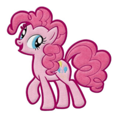

Pinkie Pie!

Pinkie Pie, full name Pinkamena Diane Pie, is a female Earth pony and one of the main characters of My Little Pony Friendship is Magic. She is an energetic and sociable baker at Sugarcube Corner, where she lives on the second floor with her toothless pet alligator Gummy, and she represents the element of laughter. Pinkie writes and performs many songs, and she is the source of many of the show's comical and cartoonish gags. She is called Ponka Po in some merchandise.